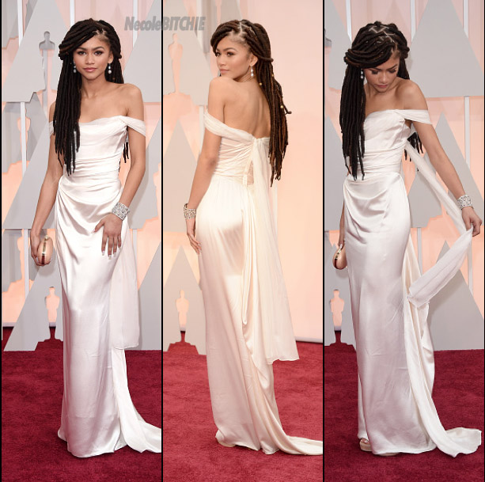

Zendaya is a strong independent female who expresses her feelings and views with great passion. She speaks back to 'haters'/ mean comments through her social media and interviews. An example being when she walked the red carpet at the 2015 Academy Awards in a white slinky Vivienne Westwood gown with cascading dreadlocks, she brought out a beautiful diversity in fashion. A news anchor from "E!" commented about her look (some people would sa in a racist way) saying,“I feel like she smells like patchouli. Or weed.” Zendaya responded on Instagram with: “There is already a harsh criticism of African-American hair in society without the help of ignorant people who choose to judge others based on the curl of their hair.” 